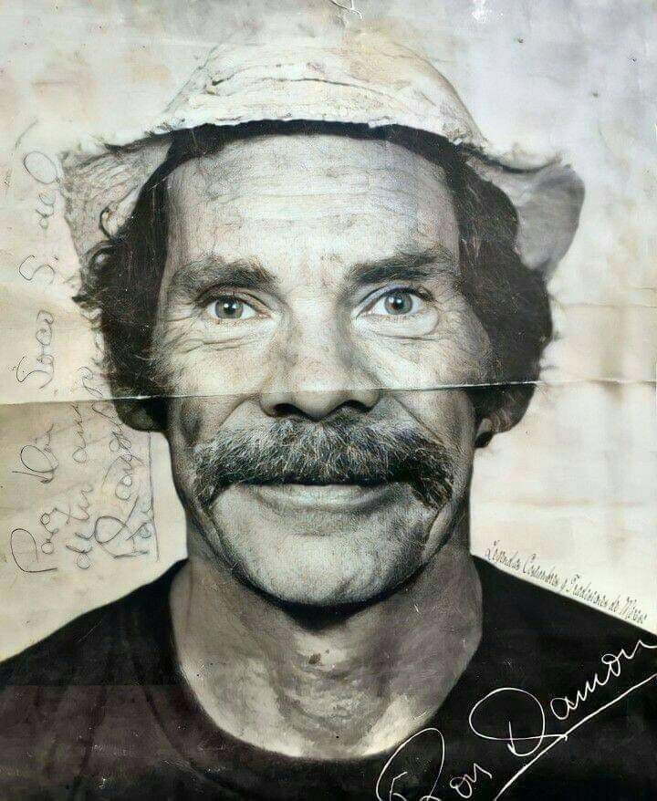
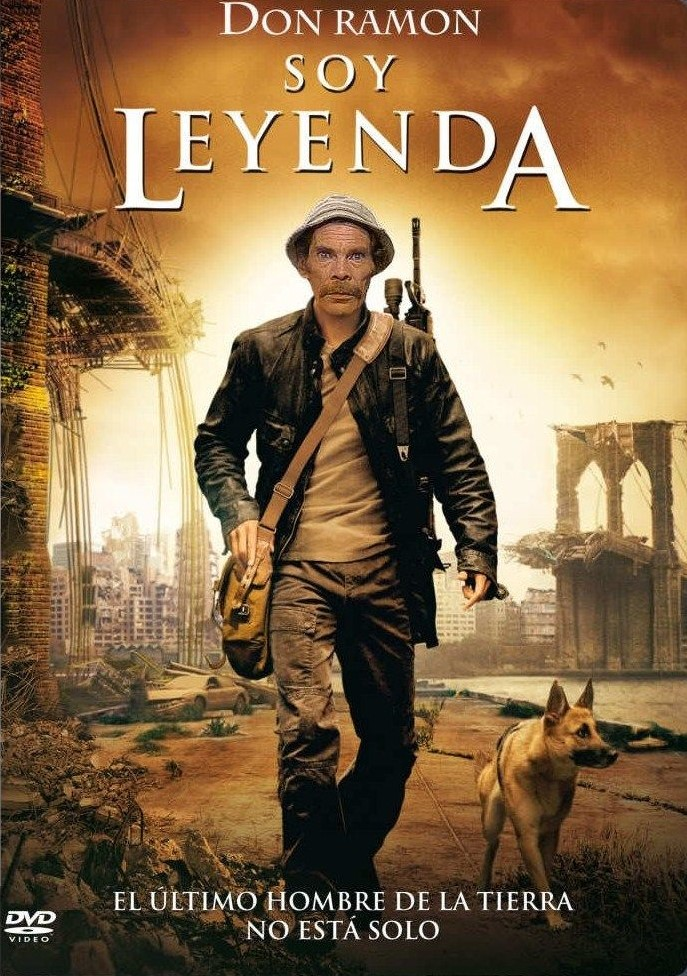
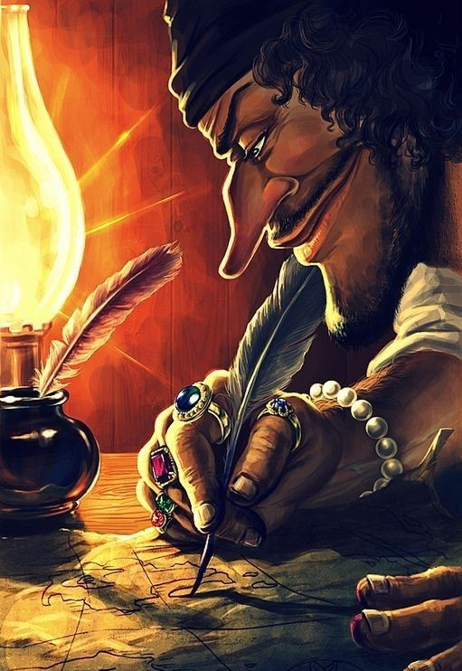

EL MERO DON RAMON
Quien es?
Don Ramon fue un personaje muy conocido de la serie mexicana El Chavo del 8.
Caracteristicas:
Don Ramon un hombre humilde que se la juega de loco.
Un capitulo de el:
Ver CapituloFotos:


